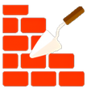
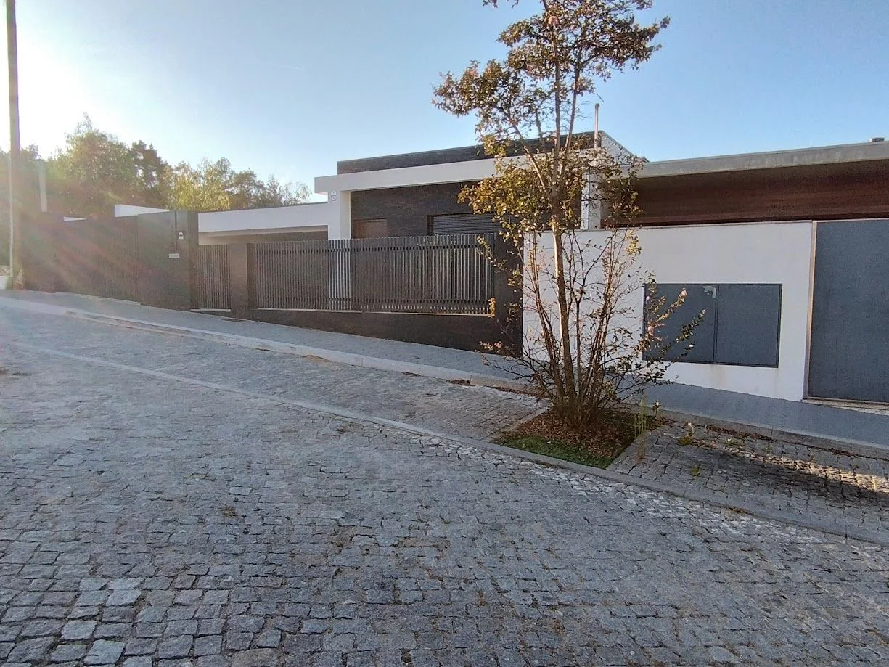
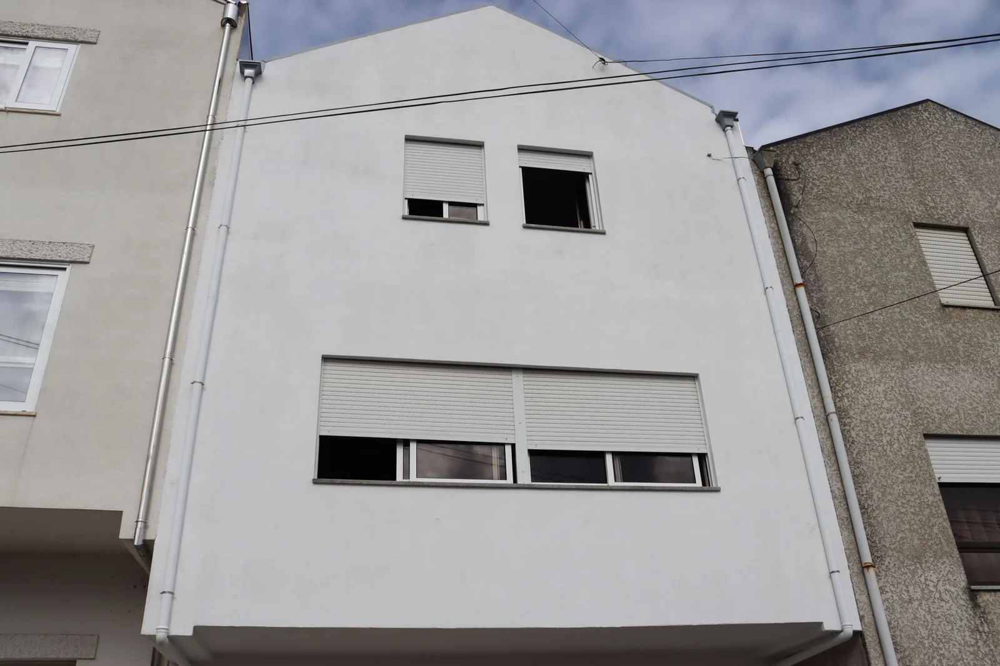
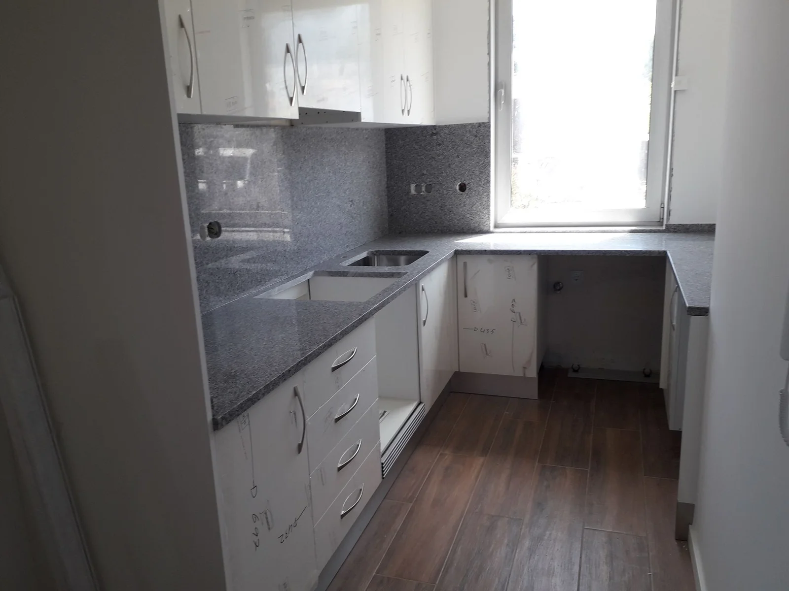

Separar as intervenções.
Organizei as três áreas que já apresentam. Quem chega com uma remodelação em mente pode começar por aí, sem confundir esse pedido com uma construção de raiz.

CDMCCONSTRUÇÕESVila Nova de Gaia · Porto
Construção, LSF e reabilitação. Comece pelo tipo de intervenção e prepare a conversa sobre a sua obra.
Encontrar o ponto de partida
Portefólio CDMC
A empresa apresenta construção de habitações, trabalhos em fachadas e remodelação de interiores. Estes exemplos ajudam a situar a conversa.

O exterior e o contexto do edifício.

O espaço existente e a utilização pretendida.
O primeiro passo
Explore uma área e a informação útil para a primeira conversa. A escolha não determina uma solução técnica.
Demonstração local · sem envioPara preparar o contacto
Comece pela localização e pela fase do projeto. A definição do âmbito depende dos elementos disponíveis.
A proposta · Ricardo Almeida
O vosso portefólio já mostra habitações, fachadas e interiores. Nesta demonstração, liguei essa variedade a três percursos de preparação, para a pessoa conseguir explicar a obra antes de entrar nos pormenores técnicos.
Experimentar o percursoOrganizei as três áreas que já apresentam. Quem chega com uma remodelação em mente pode começar por aí, sem confundir esse pedido com uma construção de raiz.
Os elementos sugeridos mudam com a intervenção: terreno e projeto numa construção; fotografias e espaços a alterar numa remodelação. Não peço ao visitante uma decisão técnica automática.
As fotografias mantêm o trabalho real em primeiro plano. A escolha da área e da fase produz um resumo simples, que poderia acompanhar um futuro contacto pelo vosso processo habitual.
Uma filmagem a preparar convosco
Proponho acompanhar uma intervenção que possam divulgar, filmando a equipa a preparar uma superfície, a executar um acabamento e a verificar o trabalho. Uma explicação curta sobre a razão de cada etapa pode ficar junto do exemplo no site. O visitante vê o resultado e compreende uma parte da execução. A obra, as autorizações e o que faz sentido mostrar seriam definidos convosco.
Na Canvas Custom Furniture, fiz a filmagem, a edição e a integração do filme no website. O visitante pode ver a execução para além de ler a apresentação da empresa.
Ver o projeto CanvasGostava de perceber que trabalhos querem destacar e como recebem os pedidos hoje.